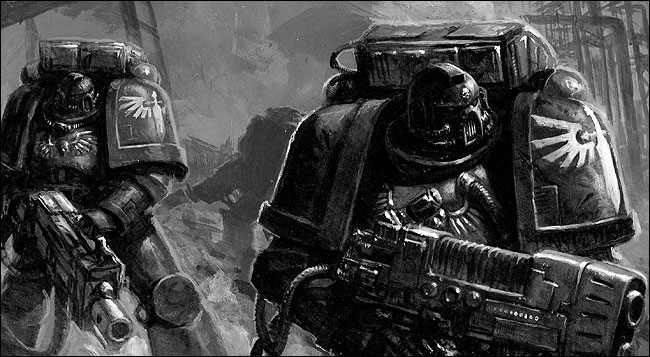

 Świat gry umieszczony jest po 40000 r. n.e. w obszarze galaktyki spiralnej nazywanej przez nas Drogą Mleczną, u apogeum ery panowania człowieka w tymże układzie. Główny wątek wielopłaszczyznowej fabuły krąży wokół zmagań rządzącej się bezwzględną doktryną ludzkości z innymi kosmicznymi potęgami i z własnymi konfliktami wewnętrznymi. Ludzie od tysiącleci utrzymują hegemonię zorganizowani w ogromnym organizmie państwowym zwanym oficjalnie Imperium Ludzkości (ang. Imperium of Man) ze stolicą na Ziemi zwanej inaczej Terra (oficjalnie Święta Terra – ang. Holy Terra), które skupia blisko milion zamieszkanych planet i obejmuje większy obszar galaktyki. Imperium od zarania prowadzone jest przez nieśmiertelnego Imperatora, otaczanego boskim kultem, którego wola interpretowana jest przez Arcylordów Terry. Ludzkie państwo jest tu dystopijnym tworem, w którym propagowana jest opresywna ksenofobia, i wyższość ludzi nad innymi cywilizacjami, gdzie postęp i nowe ruchy myślowe są surowo potępiane, w obawie przed odejściem ludzkości od wiary we wskazania Imperatora (co w powszechnym mniemaniu doprowadziłoby do rychłego upadku całego rodzaju ludzkiego). Propaganda uczyniła z enigmatycznego i bezimiennego Imperatora jedyny klucz do dalszego trwania ludzkiego gatunku. Ma jednoczyć ludzi we wspólnym celu, krzewić poczucie własnej siły i rozwiewać wszelkie wątpliwości, i choć swoją nadnaturalną aurą budzi lęk przed najmniejszym sprzeciwem i zawahaniem, to niesie też jedyną wiarygodną obietnicę bezpieczeństwa i wiecznego trwania ludzkości i jej chwały.
Warhammer 40,000 (w dosłownym tłumaczeniu Młot Bojowy 40000, lub Wojenny Młot 40000) – strategiczna gra bitewna o rozległym tle fabularnym, zakładająca rozgrywkę dla dwóch, lub więcej graczy przy użyciu miniaturowych modeli pojazdów, żołnierzy i innych obiektów, opracowana przez brytyjskie studio Games Workshop.